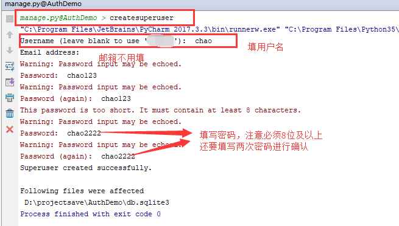
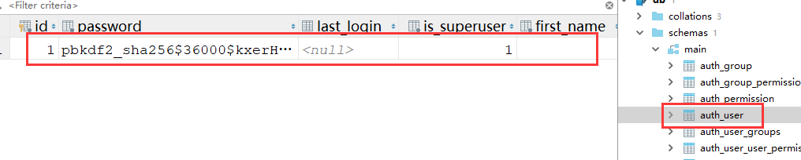

我们在开发一个网站的时候，无可避免的需要设计实现网站的用户系统。此时我们需要实现包括用户注册、用户登录、用户认证、注销、修改密码等功能，这还真是个麻烦的事情呢。
Django作为一个完美主义者的终极框架，当然也会想到用户的这些痛点。它内置了强大的用户认证系统--auth，它默认使用 auth_user 表来存储用户数据，使用auth模块来进行用户认证，那么需要使用人家django自带的auth_user表来存储用户的信息数据。
模块导入：
from django.contrib import auth那么有人就有疑问 了，这个auth_user表并不是我们自己在models.py文件中创建的啊，这通过代码怎么操作啊？
其中一个往auth_user表里面添加数据的命令，可以先多添加几个用户，方便后面操作：
python manage.py createsuperuser #要通过这个指令来创建用户，因为这个指令会将你的密码加密。
然后表中就有数据了：这个表里面的数据现在先关注username和password字段就可以了，其他的字段可为空。

User表具有以下字段：
内置的User模型拥有以下的字段：
username： 用户名。150个字符以内。可以包含数字和英文字符，以及_、@、+、.和-字符。不能为空，且必须唯一！
first_name：歪果仁的first_name，在30个字符以内。可以为空。
last_name：歪果仁的last_name，在150个字符以内。可以为空。
email：邮箱。可以为空。
password：密码。经过哈希过后的密码。
#groups：分组。一个用户可以属于多个分组，一个分组可以拥有多个用户。groups这个字段是跟Group的一个多对多的关系。
#user_permissions：权限。一个用户可以拥有多个权限，一个权限可以被多个用户所有用。和Permission属于一种多对多的关系。
is_staff：是否可以进入到admin的站点。代表是否是员工。这个字段如果不使用admin的话，可以自行忽略，不影响使用
is_active：是否是可用的。对于一些想要删除账号的数据，我们设置这个值为False就可以了，而不是真正的从数据库中删除。
is_superuser：是否是超级管理员。如果是超级管理员，那么拥有整个网站的所有权限。
last_login：上次登录的时间。
date_joined：账号创建的时间。auth中提供了许多实用方法：
提供了用户认证功能，即验证用户名以及密码是否正确，一般需要username 、password两个关键字参数，因为你仔细看看auth_user表的话，你会发现用户名和密码的字段名称就是username和password。
如果认证成功（用户名和密码正确有效，就是去auth_user表中查询一下是否存在这条记录），便会返回一个 User 对象，查询认证失败返回None。
authenticate()会在该 User 对象上设置一个属性来标识后端已经认证了该用户，且该信息在后续的登录过程中是需要的。
用法：
user = auth.authenticate(username='theuser',password='thepassword')
该函数接受一个HttpRequest对象，以及一个经过认证的User对象。
该函数实现一个用户登录的功能。它本质上会在后端为该用户生成相关session数据，保持会话用。
用法：
from django.contrib.auth import authenticate, login
def my_view(request):
username = request.POST['username']
password = request.POST['password']
user_obj = authenticate(username=username, password=password)
if user_obj:
login(request, user_obj) #可以简单理解为request.session['user_id']=user_id，并且将user_obj封装到了request里面，通过request.user=user_obj
# Redirect to a success page.
...
else:
# Return an 'invalid login' error message.
...注意：
只要使用login(request, user_obj)之后，request.user就能拿到当前登录的用户对象。否则request.user得到的是一个匿名用户对象（AnonymousUser Object，是request.user的默认值），这个匿名用户的状态在我的视图函数博客的那个request那一节有介绍，都是空。
详细原理请查看 AuthenticationMiddleware 中间件源码。
使用login方法之前，打印user的状态
def index(request):
print(request.user) #没有经过login方法来封装用户的信息，那么这个显示的是一个匿名用户
print(request.user.id) #None
print(request.user.username) #空的
print(request.user.is_active) #False
return render(request,'index.html')使用login方法之后，打印user的状态
def index(request):
print(request.user) #chao,request.user对象本身是全局的，是当前登陆的user对象，并且可以在模板语言里面直接使用{{ request.user.username }}，万能的句点号
print(request.user.id) #1 #通过id、username等可以判断用户是否登陆了，但是一般我们都用后面要学的is_authenticated()方法来进行判断。
print(request.user.username) #chao
print(request.user.is_active) #True
return render(request,'index.html')该函数接受一个HttpRequest对象，无返回值。
当调用该函数时，当前请求的session信息会全部清除。该用户即使没有登录，使用该函数也不会报错。
用法：
from django.contrib.auth import logout
def logout_view(request):
logout(request) #其实内部就是执行了request.session.flush()
# Redirect to a success page.关于User表的扩展阅读内容(目前作为了解)
Django内置的User模型虽然已经足够强大了。但是有时候还是不能满足我们的需求。比如在验证用户登录的时候，他用的是用户名作为验证，而我们有时候需要通过手机号码或者邮箱来进行验证。还有比如我们想要增加一些新的字段。那么这时候我们就需要扩展用户模型了。扩展用户模型有多种方式。这里我们来一一讨论下。
1. 设置Proxy模型：
作用: 给模型增加操作方法
局限: 不能增加或减少User模型的字段
好处: 不破坏原来的User模型的表结构
如果你对Django提供的字段，以及验证的方法都比较满意，没有什么需要改的。但是只是需要在他原有的基础之上增加一些操作的方法。那么建议使用这种方式。示例代码如下：
# models.py
class Person(User):
# 如果模型是一个代理模型
# 那么就不能在这个模型中添加新的Field
# telephone = models.CharField(max_length=11) # 错误写法
class Meta:
proxy = True
# proxy正确用法是给模型添加自定义方法
# 如添加列出黑名单的方法
def get_blacklist(self):
return self.objects.filter(is_active=False)
在以上，我们定义了一个Person类，让他继承自User，并且在Meta中设置proxy=True，说明这个只是User的一个代理模型。他并不会影响原来User模型在数据库中表的结构。以后如果你想方便的获取所有黑名单的人，那么你就可以通过Person.get_blacklist()就可以获取到。并且User.objects.all()和Person.objects.all()其实是等价的。因为他们都是从User这个模型中获取所有的数据。
2. 一对一外键：
作用: 给模型增加新的字段, 新方法
局限: 只能增加, 不能减少字段, 不能修改户验证方法: authenticate
好处: 不破坏原来的User模型的表结构
如果你对用户验证方法authenticate没有其他要求，就是使用username和password即可完成。但是想要在原来模型的基础之上添加新的字段，那么可以使用一对一外键的方式。示例代码如下：
# models.py
from django.contrib.auth.models import User
from django.db import models
from django.dispatch import receiver
from django.db.models.signals import post_save
class UserExtension(models.Model):
user = models.OneToOneField(User,on_delete=models.CASCADE,related_name='extension')
birthday = models.DateField(null=True,blank=True)
school = models.CharField(max_length=100)
@receiver(post_save,sender=User)
def create_user_extension(sender,instance,created,**kwargs):
if created:
UserExtension.objects.create(user=instance)
else:
instance.extension.save()
以上定义一个UserExtension的模型，并且让她和User模型进行一对一的绑定，以后我们新增的字段，就添加到UserExtension上。并且还写了一个接受保存模型的信号处理方法，只要是User调用了save方法，那么就会创建一个UserExtension和User进行绑定。
# views.py
from django.contrib.auth.models import User
from django.http import HttpResponse
def one_to_one_view(request):
user = User.objects.create_user(username='Tom',email='tom@qq.com',password='111111')
# 给扩展的字段设置值
user.extension.school = 'Harvard'
user.save()
return HttpResponse('一对一扩展User模型')
3. 继承自AbstractUser：
作用: 给模型增加新的字段, 修改户验证方法: authenticate
局限: 只能增加, 不能减少字段
坏处: 破坏了原来的User模型的表结构
对于authenticate不满意，并且不想要修改原来User对象上的一些字段，但是想要增加一些字段，那么这时候可以直接继承自django.contrib.auth.models.AbstractUser，其实这个类也是django.contrib.auth.models.User的父类。比如我们想要在原来User模型的基础之上添加一个telephone和school字段。示例代码如下：
# models.py
from django.contrib.auth.models import AbstractUser
class User(AbstractUser):
telephone = models.CharField(max_length=11,unique=True)
school = models.CharField(max_length=100)
# 指定telephone作为USERNAME_FIELD, 而不是原来的username字段, 所以username要重写
username = models.CharField(max_length=150)
# 指定telephone作为USERNAME_FIELD，以后使用authenticate
# 函数验证的时候，就可以根据telephone来验证
# 而不是原来的username
USERNAME_FIELD = 'telephone'
# USERNAME_FIELD对应的'telephone'字段和密码字段默认是必须的字段
# 下[]可以添加其它必须的字段, 比如['username', 'email']
REQUIRED_FIELDS = []
# 重新定义Manager对象，在创建user的时候使用telephone和
# password，而不是使用username和password
objects = UserManager()
# 重写UserManager
class UserManager(BaseUserManager):
use_in_migrations = True
def _create_user(self, telephone, password, **extra_fields):
if not telephone:
raise ValueError("请填入手机号码！")
if not password:
raise ValueError("请填入密码!")
user = self.model(telephone=telephone, **extra_fields)
user.set_password(password)
user.save(using=self._db)
return user
def create_user(self, telephone, password, **extra_fields):
extra_fields.setdefault('is_staff', False)
extra_fields.setdefault('is_superuser', False)
return self._create_user(telephone, password, **extra_fields)
def create_superuser(self, telephone, password, **extra_fields):
extra_fields.setdefault('is_staff', True)
extra_fields.setdefault('is_superuser', True)
if extra_fields.get('is_staff') is not True:
raise ValueError('Superuser must have is_staff=True.')
if extra_fields.get('is_superuser') is not True:
raise ValueError('Superuser must have is_superuser=True.')
return self._create_user(telephone, password, **extra_fields)
然后再在settings中配置好
# settings.py
AUTH_USER_MODEL = 'youappname.User'
这种方式因为破坏了原来User模型的表结构，所以必须要在第一次migrate前就先定义好。
4. 继承自AbstractBaseUser模型：
作用: 给模型增加或减少字段, 修改户验证方法: authenticate
坏处: 破坏了原来的User模型的表结构
注意: 继承自AbstractBaseUser同时还要继承PermissionsMixin
如果你想修改默认的验证方式，并且对于原来User模型上的一些字段不想要，那么可以自定义一个模型，然后继承自AbstractBaseUser，再添加你想要的字段。这种方式会比较麻烦，最好是确定自己对Django比较了解才推荐使用。步骤如下：
创建模型。示例代码如下：
# models.py
from django.contrib.auth.base_user import AbstractBaseUser
from django.contrib.auth.models import PermissionsMixin
from django.db import models
class User(AbstractBaseUser,PermissionsMixin):
email = models.EmailField(unique=True)
username = models.CharField(max_length=150)
telephone = models.CharField(max_length=11,unique=True)
is_staff = models.BooleanField(default=False)
is_active = models.BooleanField(default=True)
USERNAME_FIELD = 'telephone'
REQUIRED_FIELDS = []
# 这里的UserManager同方法3, 需要重写
objects = UserManager()
def get_full_name(self):
return self.username
def get_short_name(self):
return self.username
其中password和last_login是在AbstractBaseUser中已经添加好了的，我们直接继承就可以了。然后我们再添加我们想要的字段。比如email、username、telephone等。这样就可以实现自己想要的字段了。但是因为我们重写了User，所以应该尽可能的模拟User模型：
USERNAME_FIELD：用来描述User模型名字字段的字符串，作为唯一的标识。如果没有修改，那么会使用USERNAME来作为唯一字段。
REQUIRED_FIELDS：一个字段名列表，用于当通过createsuperuser管理命令创建一个用户时的提示。
is_active：一个布尔值，用于标识用户当前是否可用。
get_full_name()：获取完整的名字。
get_short_name()：一个比较简短的用户名。
重新定义UserManager：我们还需要定义自己的UserManager，因为默认的UserManager在创建用户的时候使用的是username和password，那么我们要替换成telephone。示例代码如下：
# models.py
from django.contrib.auth.base_user import BaseUserManager
# 重写UserManager
class UserManager(BaseUserManager):
use_in_migrations = True
def _create_user(self, telephone, password, **extra_fields):
if not telephone:
raise ValueError("请填入手机号码！")
if not password:
raise ValueError("请填入密码!")
user = self.model(telephone=telephone, **extra_fields)
user.set_password(password)
user.save(using=self._db)
return user
def create_user(self, telephone, password, **extra_fields):
extra_fields.setdefault('is_staff', False)
extra_fields.setdefault('is_superuser', False)
return self._create_user(telephone, password, **extra_fields)
def create_superuser(self, telephone, password, **extra_fields):
extra_fields.setdefault('is_staff', True)
extra_fields.setdefault('is_superuser', True)
if extra_fields.get('is_staff') is not True:
raise ValueError('Superuser must have is_staff=True.')
if extra_fields.get('is_superuser') is not True:
raise ValueError('Superuser must have is_superuser=True.')
return self._create_user(telephone, password, **extra_fields)
在创建了新的User模型后，还需要在settings中配置好。配置AUTH_USER_MODEL='appname.User'。
# settings.py
AUTH_USER_MODEL = 'youappname.User'
如何使用这个自定义的模型：比如以后我们有一个Article模型，需要通过外键引用这个User模型，那么可以通过以下两种方式引用。
第一种就是直接将User导入到当前文件中。示例代码如下：
# models.py
from django.db import models
from myauth.models import User
class Article(models.Model):
title = models.CharField(max_length=100)
content = models.TextField()
author = models.ForeignKey(User, on_delete=models.CASCADE)
这种方式是可以行得通的。但是为了更好的使用性，建议还是将User抽象出来，使用settings.AUTH_USER_MODEL来表示。示例代码如下：
# models.py
from django.db import models
from django.conf import settings
class Article(models.Model):
title = models.CharField(max_length=100)
content = models.TextField()
author = models.ForeignKey(settings.AUTH_USER_MODEL, on_delete=models.CASCADE)
这种方式因为破坏了原来User模型的表结构，所以必须要在第一次migrate前就先定义好。User 对象属性：username， password（必填项）password用哈希算法保存到数据库
如果是真正的 User 对象，返回值恒为 True 。 用于检查用户是否已经通过了认证。
通过认证并不意味着用户拥有任何权限，甚至也不检查该用户是否处于激活状态，这只是表明用户成功的通过了认证。 这个方法很重要, 在后台用request.user.is_authenticated()判断用户是否已经登录，如果true则可以向前台展示request.user.name
要求：
1 用户登陆后才能访问某些页面，
2 如果用户没有登录就访问该页面的话直接跳到登录页面
3 用户在跳转的登陆界面中完成登陆后，自动访问跳转到之前访问的地址
方法1:
def my_view(request):
if not request.user.is_authenticated():
return redirect('%s?next=%s' % (settings.LOGIN_URL, request.path))方法2:
django已经为我们设计好了一个用于此种情况的装饰器：login_requierd()
from django.contrib.auth.decorators import login_required
@login_required
def my_view(request):
...若用户没有登录，则会跳转到django默认的 登录URL '/accounts/login/ ' (这个值可以在settings文件中通过LOGIN_URL进行修改)。并传递 当前访问url的绝对路径 (登陆成功后，会重定向到该路径)。
auth 给我们提供的一个装饰器工具，用来快捷的给某个视图添加登录校验。
用法：
from django.contrib.auth.decorators import login_required
@login_required
def my_view(request):
...若用户没有登录，则会跳转到django默认的 登录URL '/accounts/login/ ' 并传递当前访问url的绝对路径 (登陆成功后，会重定向到该路径)。
如果需要自定义登录的URL，则需要在settings.py文件中通过LOGIN_URL进行修改。
示例：
LOGIN_URL = '/login/' # 这里配置成你项目登录页面的路由
auth 提供的一个创建新用户的方法，需要提供必要参数（username、password）等。
用法：
from django.contrib.auth.models import User
user = User.objects.create_user（username='用户名',password='密码',email='邮箱',...）
auth 提供的一个创建新的超级用户的方法，需要提供必要参数（username、password）等。
用法：
from django.contrib.auth.models import User
user_obj = User.objects.create_superuser（username='用户名',password='密码',email='邮箱',...）auth 提供的一个检查密码是否正确的方法，需要提供当前请求用户的密码。
密码正确返回True，否则返回False。
用法：
ok = user_obj.check_password('密码')或者直接针对当前请求的user对象校验原密码是否正确：
ok = request.user.check_password(raw_password='原密码')auth 提供的一个修改密码的方法，接收 要设置的新密码 作为参数。
注意：设置完一定要调用用户对象的save方法！！！
用法：
user_obj.set_password('新密码') #user_obj其实就是request.user
user_obj.save() #request.user.save()
用户对象的属性
user_obj能够拿到认证所用用户表的数据属性，比如username， password等。
其他常用属性含义如下：
is_staff ： 用户是否拥有网站的管理权限.
is_active ： 是否允许用户登录, 设置为 False，可以在不删除用户的前提下禁止用户登录。
简单示例：
注册：
def sign_up(request):
state = None
if request.method == 'POST':
password = request.POST.get('password', '')
repeat_password = request.POST.get('repeat_password', '')
email=request.POST.get('email', '')
username = request.POST.get('username', '')
if User.objects.filter(username=username):
state = 'user_exist'
else:
new_user = User.objects.create_user(username=username, password=password,email=email)
new_user.save()
return redirect('/book/')
content = {
'state': state,
'user': None,
}
return render(request, 'sign_up.html', content) 修改密码：
@login_required
def set_password(request):
user = request.user
state = None
if request.method == 'POST':
old_password = request.POST.get('old_password', '')
new_password = request.POST.get('new_password', '')
repeat_password = request.POST.get('repeat_password', '')
if user.check_password(old_password): #校验老密码是否正确
if not new_password:
state = 'empty'
elif new_password != repeat_password:
state = 'repeat_error'
else:
user.set_password(new_password)
user.save()
return redirect("/log_in/")
else:
state = 'password_error'
content = {
'user': user,
'state': state,
}
return render(request, 'set_password.html', content)
留个作业吧：给图书馆里系统添加一个登陆注册功能。
这内置的认证系统这么好用，但是auth_user表字段都是固定的那几个，我在项目中没法拿来直接使用啊！
比如，我想要加一个存储用户手机号的字段，怎么办？
聪明的你可能会想到新建另外一张表然后通过一对一和内置的auth_user表关联，这样虽然能满足要求但是有没有更好的实现方式呢？
答案是当然有了。
我们可以通过继承内置的 AbstractUser 类，来定义一个自己的Model类。django给我们自动创建的一张user表，而如果要用auth模块，就必须要使用（或继承）这张表。
这样既能根据项目需求灵活的设计用户表，又能使用Django强大的认证系统了。继承表的好处是我们可以增加一些自己需要的字段，并且同时可以使用auth模块提供的接口、方法
from django.contrib.auth.models import AbstractUser
class UserInfo(AbstractUser):
"""
用户信息表
"""
nid = models.AutoField(primary_key=True)
phone = models.CharField(max_length=11, null=True, unique=True)
def __str__(self):
return self.username需要注意的是，UserInfo表里就不需要有auth_user里重复的字段了，比如说username以及password等，但是还是可以直接使用这些字段的，并且django会自动将password进行加密
按上面的方式扩展了内置的auth_user表之后，一定要在settings.py中告诉Django，我现在使用我新定义的UserInfo表来做用户认证。写法如下：
# 引用Django自带的User表，继承使用时需要设置,这样django就知道从我们的app名的应用下的models文件中去查找UserInfo这张表了
AUTH_USER_MODEL = "app名.UserInfo"自定义认证系统默认使用的数据表之后，我们就可以像使用默认的auth_user表那样使用我们的UserInfo表了。比如：
创建普通用户：
UserInfo.objects.create_user(username='用户名', password='密码')创建超级用户：
UserInfo.objects.create_superuser(username='用户名', password='密码')再次注意：
一旦我们指定了新的认证系统所使用的表，我们就需要重新在数据库中创建该表，而不能继续直接使用原来默认的auth_user表了。
代码示例：
views.py内容如下
from django.shortcuts import render,HttpResponse,redirect
from django.urls import reverse
from crm import models
# Create your views here.
#1.引入auth认证组件来操作django的auth_user表
from django.contrib import auth
def login(request):
if request.method == 'GET':
return render(request, 'login.html')
else:
user = request.POST.get('user')
pwd = request.POST.get('pwd')
print(user, pwd)
#2.authenticate方法回去auth_user表中查询记录，查询成功返回用户对象，查询失败返回None
user_obj = auth.authenticate(username=user,password=pwd)
if user_obj:
#3.保存用户的状态信息，之前我们保存到了session表中，现在也是保存到里面，但是通过一个auth模块的login方法就搞定了，然后重定向到首页index
auth.login(request,user_obj) #做的事情request.session["user_id"] = user_obj.pk，还加了一些其他的内容，先不用管他其他的内容，还做了一个事情就是request.user = user_obj当前登陆对象
# return redirect('index') #不写reverse也行
return redirect(reverse('index'))
else:
return redirect(reverse('login'))
from django.contrib.auth.decorators import login_required
@login_required
def index(request):
#关于这个默认的匿名用户，看一下我的django的视图系统的那个博客，有相关介绍
print(request.user) #没有经过login方法来封装用户的信息，那么这个显示的是一个匿名用户
print(request.user.id) #None
print(request.user.is_superuser) #False
print(request.user.username) #空的
print(request.user.is_active) #False
# if not request.user.id: #还有一个验证是否登陆的方法，request.user.is_authenticated(),常用的是这个方法
# if not request.user.is_authenticated(): #还有一个验证是否登陆的方法，request.user.is_authenticated(),常用的是这个方法
# return redirect('login')
return render(request,'index.html')
def logout(request):
auth.logout(request) #其实就是和咱们django提供的session做的事情差不多
return redirect('login')
#注册
#注册就是要往django的auth_user表中添加一条记录，所以要想操作User表必须先引入user表，这个auth_user表是auth这个内置应用的表，所以django生成表的时候，表名字是应用名_表名，所以其实表名为User表
#引入Uset表
from django.contrib.auth.models import User
def register(request):
if request.method == 'GET':
return render(request,'register.html')
else:
user = request.POST.get('user')
pwd = request.POST.get('pwd')
# User.objects.create() #create方法也能插入数据，但是密码是明文的
User.objects.create_user(username=user,password=pwd) #创建普通用户
# User.objects.create_superuser(username=user,password=pwd) #创建超级用户
#create_user()和create_superuser()他们两个区别在admin应用里面能够体现出来，但是其实在生成的表记录里面唯一的区别就是那个is_superuser的字段值不同，如果是create_user()方法创建的用户，那么is_superuser的值为False，如果是create_superuser()方法创建的用户，那么is_superuser的值为True，所以我们可以通过这个字不同的值来判断用户是否为管理员啊等操作,这两个方法的username=user,password=pwd，两个参数是必须要给的
return redirect('login')
def set_password(request):
request.user.set_password(666)
request.user.save()
return redirect('login')urls.py内容如下
from django.conf.urls import url
from django.contrib import admin
from crm import views
urlpatterns = [
url(r'^admin/', admin.site.urls),
#登陆
url(r'^login/', views.login,name='login'),
url(r'^index/', views.index,name='index'),
#注销、退出
url(r'^logout/', views.logout,name='logout'),
#注册
url(r'^register/', views.register,name='register'),
#修改密码
url(r'^set_password/', views.set_password,name='set_password'),
]index.html内容如下：
<!DOCTYPE html>
<html lang="en">
<head>
<meta charset="UTF-8">
<title>Title</title>
</head>
<body>
<h1>
这是index页面
{{ request.user.username }}
</h1>
<div>
<a href="{% url 'logout' %}">退出</a>
</div>
<div>
<a href="{% url 'set_password' %}">修改密码</a>
</div>
</body>
</html>login.html内容如下：
<!DOCTYPE html>
<html lang="en">
<head>
<meta charset="UTF-8">
<title>Title</title>
</head>
<body>
<form action="" method="post">
{% csrf_token %}
<input type="text" name="user">
<input type="password" name="pwd">
<input type="submit">
</form>
</body>
</html>register.html内容如下
<!DOCTYPE html>
<html lang="en">
<head>
<meta charset="UTF-8">
<title>Title</title>
</head>
<body>
<form action="{% url 'register' %}" method="post">
{% csrf_token %}
<input type="text" name="user">
<input type="password" name="pwd">
<input type="submit">
</form>
</body>
</html>settings.py文件中有一个认证装饰器@login_required需要用的一个配置项：
LOGIN_URL = '/login/' #配置装饰器跳转的登陆的url